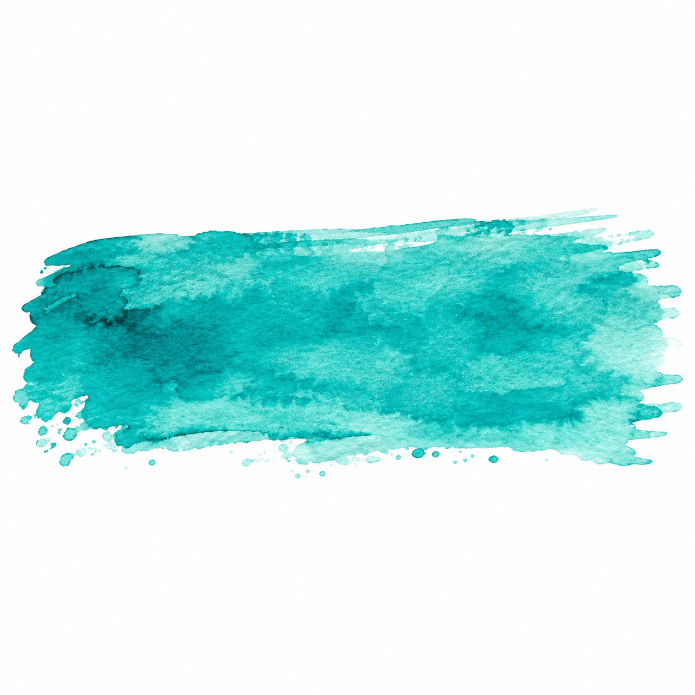

100 mākslas terapijas vingrinājumi 🎨
Mākslas
Terapija
Izpēti savas emocijas caur krāsošanu
Jūtas · Pašvērtība · Spēks · Pateicība
Laime · Laiks · Stresa pārvarēšana
Robežas · Attiecības · Nākotne
Krāso · Izpēti · Augi ✨

Emocionālā prognoze 🌊
Uzzīmē savu emocionālo laikaprognozi šai dienai. Vai ir saulains, mākoņains, vējainas vai vētra tavā iekšienē? Izmanto krāsas vai simbolus.
Jūtu seja 🌊
Uzzīmē seju, kas izsaka vairākas emocijas vienlaikus. Ļauj sev apvienot pretrunīgas jūtas vienā attēlā.
Emociju dārzs 🌊
Iedomājies, ka tavas emocijas ir augi. Uzzīmē dārzu ar dažādiem augiem — katrs pārstāv kādu jūtu tavam sirdī.
Jūtu laikapstākļi 🌊
Kādi laikapstākļi labāk raksturo tavu pašreizējo garastāvokli? Uzzīmē tos — debesis, mākoņus, vēju, sauli vai vētru.
Emociju vilnis 🌊
Izvēlies vienu spēcīgu emociju. Uzzīmē to kā vilni — tā sākumu, augstāko punktu un nomierinājumu.
Balonu palaišana 🌊
Visus balonus sasien pie vienas aukliņas, viena balona sapnis vai uzdevums ir negatīvs. Izkrāso tos un ievēro, kurš balons ir mazāks debesīs. Palaidi to vaļā.
Prieks un skumjas 🌊
Uzzīmē vietu, kur prieks un skumjas satiekas tevī. Kā šīs divas jūtas izskatās blakus viena otrai?
Dusmas kā forma 🌊
Piešķir savām dusmām formu un krāsu. Uzzīmē tās, neizskaidrojot — vienkārši ļauj rokai zīmēt.
Bailes kā zīmējums 🌊
Uzzīmē vienu savu baili kā simbolisku attēlu. Nefotogrāfiski — tikai sajūta, forma, kustība.
Atbrīvošanās upe 🌊
Iedomājies upi, kas plūst cauri tev. Uzraksti uz tās ūdens visas lietas, ko vēlies palaist, un iedomājies, kā tās aizplūst prom.
Pašmīlestības saulespuķe 🌟
Tu esi unikāla, vērtīga un pietiekama tieši tāda, kāda esi. Aizpildi saulespuķes ziedlapas ar lietām, kas Tevī patīk un ko novērtē — savās stiprajās pusēs.
Manas stiprās puses 🌟
Uzzīmē koku ar daudz zariem. Katrs zars ir kāda tava spēja vai stiprā puse. Cik daudz zaru tu vari uzzīmēt?
Mana uzvara 🌟
Atceries situāciju, kad tu kaut ko pārvarēji vai sasniedzi. Uzzīmē šo brīdi kā savu personīgo triumfa attēlu.
Manas vērtības 🌟
Uzzīmē vai simboliski attēlo piecas lietas, kas tev ir vissvarīgākās dzīvē. Nav pareizo atbilžu — tikai tavas.
Pašmīlestība 🌟
Uzzīmē sevi, ko kāds mīloši aprūpē vai stiprina. Kā izskatās, kad tu esi mīlēts un pieņemts tāds, kāds esi?
Ceļš uz sevis pieņemšanu 🌟
Uz ceļa ir daudz lietusskārgumu un pagriezienu. Attēlo savā personīgajā ceļā svarīgos brīžus — no kā tu atnāci, kur esi tagad, uz kurieni tu ej.
Iekšējais kritiķis 🌟
Piešķir savam iekšējam kritiķim formu un seju. Kā tas izskatās? Tad uzzīmē, kā tu ar to sazinies ar laipnību.
Manas dāvanas 🌟
Uzzīmē dāvanu kasti vai maisu. Iekšā ir tavas unikālās dāvanas — talants, spējas, enerģija. Ko tur atrod?
Mana varoņvēsture 🌟
Uzzīmē sevi kā varoni vai varoņu savā stāstā. Kādi šķēršļi tu esi pārvarējis? Kāds tev ir pārdabisks spēks?
Es esmu 🌟
Raksti savā iekšienē vārdus 'Es esmu...' un turpini ar īpašībām, kas tev patīk. Uzzīmē sevi ar šīm īpašībām kā vizuālu attēlu.
Spēka kalns ⛰️
Vizualizē pārvarētās grūtības un no tām gūto spēku. Uzzīmē kalnu, kura pakājē ir tavi šķēršļi, bet virsotnē — tu, uzvarētājs(-a).
Manas saknes ⛰️
Uzzīmē savus pamatus — kas tevi stiprina un ved saknes. Ģimene, draugi, pārliecības, pieredze. Kas dod stabilitāti?
Pārvarēšanas stāsts ⛰️
Uzzīmē brīdi, kad tu izkļuvi no kādas grūtās situācijas. Kāds varonis tu biji tajā brīdī?
Iekšējā uguns ⛰️
Uzzīmē uguni sevī — to daļu, kas nekad neizdziest. Kāda tā ir? Liela vai maza? Kādā krāsā tā deg?
Izturības simbols ⛰️
Izvēlies dzīvnieku, augi vai priekšmetu, kas simbolizē izturību. Uzzīmē to un paskaidro, kāpēc izvēlējies tieši šo.
Pagātnes uzvaru mēļķe ⛰️
Uzraksti vai uzzīmē katru reizi, kad tu esi uzvarējis grūtumam. Cik daudz vietu ir tavā uzvaras mēļķē?
Pārmaiņu spēks ⛰️
Kā tu esi mainījies(-usies) cauri grūtiem laikiem? Uzzīmē sevi pirms un pēc lielākās pārmaiņas.
Atbalsta sistēma ⛰️
Uzzīmē cilvēkus vai lietas, kas tevi stiprina un palīdz tikt galā. Kā viņi izskatās tavā dzīvē?
Spēka vārdi ⛰️
Uzzīmē vārdus vai frāzes, kas tev palīdz — tev ticīgas mantas. Ienver tās skaistā vizuālā attēlā.
Brīnums sevī ⛰️
Uzzīmē vienu lietu par sevi, kas tevi pašu(-u) pārsteidz vai apbrīno. Ko tu paveici, ka šķita neiespējami?
Pateicības koks 🌳
Radoši pieraksti, par ko esi pateicīgs(-a). Uzzīmē koku, kurā katrs zars un lapa ir kāda lieta, par ko tu pateicies — cilvēks, brīdis, sajūta vai dāvana.
Mazās prieka dāvanas 🌳
Uzzīmē vai uzraksti desmit mazas lietas, kas tev šodien deva prieku. Nekas nav par mazo!
Cilvēku pateicība 🌳
Uzzīmē vai simbolizē trīs cilvēkus, par kuriem šodien esi pateicīgs(-a). Ko katrs no viņiem tev devis?
Pagātnes dāvanas 🌳
Uzzīmē smagāko pagātnes pieredzi kā dāvanu — ko tā tev devis, ko iemācīja, kā nostiprinājusi?
Ķermeņa pateicība 🌳
Uzzīmē vai atzīmē trīs lietas, par kurām tu esi pateicīgs(-a) savam ķermenim šodien. Ko tas dara katru dienu bez tevis?
Dabas pateicība 🌳
Uzzīmē brīdi dabā, kas tevi piepilda ar pateicību. Saullēkts? Lietus? Koks? Zieds? Jūra?
Pateicības vēstule 🌳
Uzraksti vai uzzīmē vēstuli — sev vai kādam citam — ar pateicību. Ko tu visvairāk vēlies izteikt?
Sīkie momenti 🌳
Uzzīmē vienu parastu rītu, pusdienlaiku vai vakaru, par kuru esi pateicīgs(-a). Kas tajā ir labi?
Izaugsmes pateicība 🌳
Uzzīmē lietu vai situāciju, kas tev bija grūta, bet palīdzēja augt. Kāda skaistuma tā nesa?
Pateicības mantojums 🌳
Ko tu vēlies atstāt kā mantojumu? Ko tu pats(-i) esi saņēmis no citiem, par ko esi pateicīgs(-a)?
Tilts uz laimi ☀️
Savieno savas pašreizējās jūtas ar to, ko vēlies savai labklājībai. Uzzīmē tiltu starp to, kur esi tagad, un to, kur vēlies būt.
Laimes ainava ☀️
Uzzīmē vietu, kur tu esi vislaipnākais(-ā) un visvairāk tu pats. Reālu vai iedomātu — tādu, kur esi pilnīgi mierīgs(-a).
Mazās laimes ☀️
Uzzīmē piecu lietu sarakstu, kas tev dod lielu prieku, bet tās ir mazas un vienkāršas. Ko tu dažreiz aizmirsti novērtēt?
Laimes recepte ☀️
Uzzīmē savu personīgo laimes recepti — kādi ingredienti tev vajadzīgi, lai just laimi?
Iepriecinošas aktivitātes ☀️
Uzzīmē vai uzraksti darbības, kas tev piepilda enerģiju un dod prieku. Kāda no tām tev ir vistuvāk sirdij?
Laimes brīdis ☀️
Atceries pēdējo brīdi, kad tu jutāji īstu laimi. Uzzīmē šo brīdi tā, kā tu to atceries.
Laimes krāsas ☀️
Kādas krāsas asociējas tev ar laimi? Uzzīmē tās bez formas — tikai plankumi, līnijas, apļi.
Vienkāršā laime ☀️
Uzzīmē kaut ko ļoti vienkāršu, kas tev dod lielu laimi — tasi kafijas, siltumu, muziku. Ko bieži aizmirsti?
Sapnis par laimi ☀️
Uzzīmē savu lielāko dzīves sapni, kas tev dotu dziļu laimi. Kāda ainava tas ir?
Laimes mantojums ☀️
Uzzīmē laimi, ko tu vēlies atstāt citiem. Kā tu vari iepriecināt kādu citu tuvinieku?
Laika smilšu pulkstenis ⏳
Atstāj noslogojošo aiz sevis un vērs skatienu uz nākamo soli. Uzzīmē smilšu pulksteni — augšā ir tas, ko tu atstāj; apakšā — jaunie sākumi.
Tagadnes brīdis ⏳
Uzzīmē šo brīdi tieši tagad — ko tu redzi, dzirdi, jūti? Bez skatīšanās pagātnē vai nākotnē.
Laika ritms ⏳
Uzzīmē savu ideālo dienas ritmu — kā tu vēlies pavadīt rītus, pēcpusdienas, vakarus?
Pagātne kā māzija ⏳
Uzzīmē pagātnes pieredzi, kas tevi vēl ietekmē šodien. Kā tā izskatās vizuāli?
Nākotnes cerība ⏳
Uzzīmē vienu lietu nākotnē, uz ko tu gaidi ar prieku un cerību. Kāda tā izskatās?
Pagātnes gudrie vārdi ⏳
Atceries gudros vai mierinošos vārdus, ko kāds tev ir teicis. Uzzīmē šo vēstījumu vizuāli.
Laika dāvanas ⏳
Kādas dāvanas ir atnesis laiks — ko tu tagad saproti, ko agrāk nevarēji? Uzzīmē šo izaugsmi.
Lēnums un ātrums ⏳
Uzzīmē brīdi, kad tu palēninājies. Ko tu redzēji, dzirdēji, jutāji? Ko tu parasti pamanīsi tikai tad?
Laika mantojums ⏳
Ko tev nozīmē atstāt laika mantojumu? Ko tu darīsi ar to laiku, kas tev dots?
Ritmu ainava ⏳
Uzzīmē gadalaiku maiņu kā savu dzīves ritmu. Kāds gadalaiks tev pašlaik ir?
Stresa bumbas 🌿
Atpazīsti savus stresa faktorus un atrodi stratēģijas, kā ar tiem tikt galā. Uzzīmē katru stresa avotu kā bumbu — cik liela? Cik smaga? Ko tu vari darīt?
Miera telpa 🌿
Uzzīmē vietu — reālu vai iedomātu — kur tevi nekad nesasniedz stress. Kā tā izskatās, smaržo, jūtas?
Elpas ainava 🌿
Uzzīmē savu elpu kā vizuālu attēlu. Ieelpas — izelpas kustība. Ko elpa dara ar stresu?
Kontroles robeža 🌿
Uzzīmē lietas, ko tu mēģini kontrolēt, bet nevari. Tad uzzīmē lietas, ko tu vari kontrolēt. Kāda ir robeža?
Stress kā ainava 🌿
Kāda ainava vislabāk izsaka tavu stresu? Vētra? Okeāns? Tukša telpa? Uzzīmē to bez vārdiem.
Atpūtas rituāls 🌿
Uzzīmē savu ideālo atpūtas rituālu — ko tu dari, kad vajag atjaunoties un nomierināties?
Kustība kā dziedēšana 🌿
Uzzīmē kustības veidu, kas tevi dziedē vai atbrīvo. Deja, pastaiga, peldēšana — kāda kustība runā ar tavu ķermeni?
Pārslogotais kauss 🌿
Uzzīmē pilnu kausu — tas esi tu, kad esi pārslogots(-a). Kas notiek, kad kauss pārpilstas?
Nomierināšanās mirklis 🌿
Atceries brīdi, kad tu jutāji pilnīgu mieru pēc saspringta perioda. Uzzīmē šo brīdi — ko tu jutāji?
Stress kā skolotājs 🌿
Ko stress ir tev iemācījis par sevi, savām vajadzībām un robežām? Uzzīmē šo mācību vizuāli.
Manas robežas 🌱
Uzzīmē sevi centrā un apkārt tev apli. Šis aplis ir tava personīgā telpa. Kā tas izskatās?
Jā un Nē 🌱
Uzzīmē divus simbolus vai attēlus — vienu par 'Jā, es to gribu' un otru par 'Nē, to es negribu'. Kāda atšķirība?
Robeža kā upe 🌱
Uzzīmē upi starp tevi un kādu, ar ko tev ir sarežģītas attiecības. Cik plata ir upe? Vai tur ir tilts?
Aizsargāta telpa 🌱
Uzzīmē sevi ar aizsargvairogs, sienu vai apli. Kā izskatās tava iekšējā aizsardzība?
Robežas no mīlestības 🌱
Uzzīmē cilvēku, kurš nosprauž robežu ar mīlestību — nevis no bailēm. Kā tas atšķiras?
Manas vajadzības 🌱
Uzzīmē vai uzraksti savas svarīgākās vajadzības. Ko tev vajag, lai justos vesels(-a) un stiprs(-a)?
Vārdveidošana 🌱
Uzzīmē vienas savas robežas vārdus vai simbolus. Kā skan vārdi 'Man šis nepatīk' vai 'Man vajag...' tavā mutē?
Pārpildīts kauss 🌱
Uzzīmē pilnu kausu — tas esi tu, kad esi pārslogots(-a). Kādi signāli tev saka, ka tev vajag apstāties?
Robeža kā dāvana 🌱
Uzzīmē sevi, dāvinot kādam robežu — aizsargājot viņu no kaut kā kaitīga. Kā izskatās robeža kā mīlestības izpausme?
Atgriešanās pie sevis 🌱
Uzzīmē sevi atgriežoties pie sevis pēc ilga laika, kad tu piepildīji citu vajadzības. Ko jūti?
Manu attiecību karte 🤝
Uzzīmē sevi centrā un apkārt tev cilvēkus, kas ir tev svarīgi. Kādi savienojumi? Kādi attālumi?
Savienojuma brīdis 🤝
Uzzīmē brīdi, kad tu jutāji dziļu savienojumu ar kādu citu. Kāda ainava tā ir?
Nesavienošanās brīdis 🤝
Uzzīmē brīdi, kad attiecībās tu jutāji attālumu vai vientulību. Kā tas izskatās?
Mīlestības valodas 🤝
Kādā valodā tu saņem mīlestību — skārienu, vārdus, dāvanas, laiku vai palīdzību? Uzzīmē savu valodu.
Attiecību koks 🤝
Uzzīmē koku, kur saknes ir attiecību pamati (uzticēšanās, cieņa), stumbrs — jūs abi, zari — kopīgās pieredzes.
Konflikts kā ainava 🤝
Uzzīmē konfliktu ar kādu kā ainavu. Kādi laikapstākļi? Kā jūs abiem stāvat tajā ainavā?
Vientulība un vienatnīgums 🤝
Uzzīmē atšķirību starp vientulību (trūkst savienojuma) un vienatnīgumu (iegūts laiks sev). Kāda atšķirība?
Attiecību dziedēšana 🤝
Uzzīmē attiecību, ko tu vēlies dziedēt vai atjaunot. Kādas pūles tas prasa no abām pusēm?
Mana attiecību nākotne 🤝
Uzzīmē attiecību, ko tu vēlies — ar draugu, partneri, ģimeni vai sevi. Kāda tā izskatās?
Uzticēšanās ainava 🤝
Uzzīmē uzticēšanos kā ainavu — kāda vide tā ir? Silta? Droša? Atklāta? Cik tālu sniedzas apvārsnis?
Mana ideālā diena 🌅
Uzzīmē savu ideālo dienu — no rīta līdz vakaram. Kas tajā notiek? Ar ko tu esi? Ko jūti?
Sapnis par nākotni 🌅
Uzzīmē savu lielāko dzīves sapni — bez ierobežojumiem. Kā izskatās tava ideālā nākotne?
Nākotnes es 🌅
Uzzīmē sevi pēc 5 gadiem — optimistisko versiju. Kā tu izskatīes? Ko jūti? Kur atrodas?
Mana mantojuma ainava 🌅
Uzzīmē mantojumu, ko tu vēlies atstāt pasaulei vai cilvēkiem ap tevi. Kāda ainava tā ir?
Cerību dārzs 🌅
Uzzīmē dārzu ar savām cerībām kā augiem. Kādi augi tur ir? Kādi zied? Kādi gaida?
Bailes no nākotnes 🌅
Uzzīmē savus nākotnes bailes. Kāda forma tām ir? Cik lielas tās ir salīdzinājumā ar tevi?
Pirmais solis 🌅
Uzzīmē vienu konkrētu soli, ko vari spert šodien, lai dotos sapņa virzienā. Cik mazs vai liels tas ir?
Nākotnes vēstule 🌅
Raksti vēstuli savam nākotnes 'es' — ar padomu, cerību vai jautājumu. Uzzīmē šo vēstuli vizuāli.
Izaugsmes koks 🌅
Uzzīmē koku, kas attēlo tavu personīgo izaugsmi. Saknes ir pagātne, stumbrs — tagadne, zari — nākotne.
Miers nākotnē 🌅
Uzzīmē brīdi nākotnē, kad tu jutīsies pilnīgā mierā ar sevi un savu dzīvi. Kāda ainava tā ir?